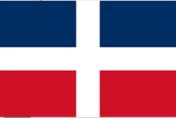
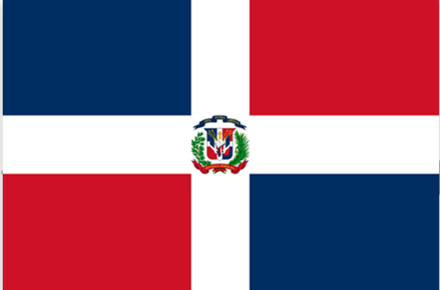

"En nombre de la Santísima, augustísima e indivisible Trinidad de Dios Omnipotente: juro y prometo, por mi honor y mi conciencia, en manos de nuestro presidente Juan Pablo Duarte, cooperar con mi persona, mi vida y bienes a la separación definitiva del gobierno haitiano y a implantar una República soberana e independiente de toda dominación extranjera, que se denominará República Dominicana. La cual tendrá su pabellón tricolor en cuadros encarnados y azules atravesado con una cruz blanca. Mientras tanto, seremos reconocidos los trinitarios con las palabras sacramentales de ‘Dios, Patria y Libertad’. Así lo prometo ante Dios y el mundo. Si tal hago, Dios me proteja y si no, me lo tome en cuenta, y mis conocidos me castiguen el perjurio y la traición, si lo vendo”.
La primera distribución de esos colores fue hecha por Juan Pablo Duarte, quien concibió el diseño original, y el día 16 de julio de 1838 obtuvo la aprobación de los trinitarios para la confección de la misma. Duarte colocó una franja azul en el margen superior de la bandera y una franja roja en el inferior, colocando la cruz blanca al centro de la misma.
Esta fue confeccionada por varias mujeres, entre ellas, María Trinidad Sánchez, María de Jesús Pina, Isabel Sosa y Concepción Bona. La primera bandera ondeó airosa por vez primera el 27 de febrero de 1844, día de la Independencia Nacional.
María Trinidad Sánchez nació en la ciudad de Santo Domingo, Capital General de Santo Domingo, el 16 de junio de 1794. Sus padres fueron Fernando Raimundo Sánchez e Isidora Ramona. Era tía de uno de los padres de la patria, Francisco del Rosario Sánchez.
Trinidad Sánchez se integró a los movimientos conspiradores que surgieron para derrocar el gobierno haitiano y los que posteriormente se formaron en contra de Pedro Santana y sus intereses anexionistas. María Trinidad Sánchez formó parte del Movimiento La Trinitaria, a pesar de ser mujer y de tratarse de un tema en ese entonces considerado para hombres. Alojó en su casa a los descendientes del general Pedro Santana, que se escondían del gobierno haitiano. Trinidad Sánchez organizó y orientó la conspiración del 1844, confeccionando con Concepción Bona, Isabel Sosa y María de Jesús Pina la primera bandera dominicana, la cual fue elaborada con todo el orgullo de sus compatriotas en la puerta del Conde el 27 de febrero del 1844.
Concepción Bona y Hernández era hija de Vicente Ignacio Bona Pérez en (1800–1844) uno de los firmantes del Manifiesto del 16 de enero de 1844, y Juana de Dios Hernández. Concepción Bona creció en el seno de una familia totalmente adscrita a la causa que seguía las ideas patrióticas de Juan Pablo Duarte. Joven valiente, se integró incondicionalmente con su familia a las ideas Trinitarias, por lo que junto a su prima María de Jesús Pina, Isabel Sosa y María Trinidad Sánchez, confeccionó con telas finas la bandera tricolor, que fue elaborada en la Puerta del Conde el 27 de febrero de 1844, por los independentistas. Concepción Bona contaba con 19 años de edad y su prima contaba con 16.
Según los historiadores dominicanos, fue ella misma quien la entregó al esposo de su prima Josefa Brea Hernández, el general, padre y prócer de la patria Ramón Matias Mella, en la Puerta de La Misericordia. El 27 de febrero de ese mismo año, cuando el sol sale se ve la bandera tricolor confeccionada por Bona y María Trinidad Sánchez, nace la República Dominicana.
María de Jesús Pina nació el 25 de diciembre de 1825, El distinguido historiador Dr. Alcides García Lluberes, consignó que doña Concepción Bona tuvo por cooperadora en la confección de la primera bandera nacional, o sea la que fue izada por Francisco del Rosario Sánchez en el Baluarte la noche del 27 de febrero de 1844, a la señorita María de Jesús Pina, prima y vecina suya, pues como se sabe ambas señoritas pertenecían a honorables familias “ardientemente adscritas al servicio de la causa revolucionaria” dominicana. Ciertamente, el padre de la señorita Pina, don Juan Pina, fue de los patriotas adictos a Duarte en los días esplendorosos de julio y febrero. Su nombre figura entre los firmantes del Manifiesto del 16 de enero de 1844 y fue de los de la columna de la noche gloriosísima del 27 de febrero.
Fue la esposa general Antonio Duvergé. Ilustrada, combatiente y entregada a la patria. Desde que fue proclamada la República se dedicó enteramente a la defensa nacional. En diversas ocasiones utilizó sabanas de su propiedad para vendar a los heridos del ejército libertador en los campos de la zona sur.
Luego, el 6 de noviembre de 1844, el Congreso Constituyente promulgó la Primera Constitución de la República, en la que quedó adoptada la Bandera Nacional como símbolo de la Patria, alternando un cuartel azul por rojo, para hacerla más armoniosa y una de las más bellas banderas del mundo.
Rojo Bermellón: Representa la sangre derramada por los patriotas en las batallas para conseguir la independencia de la Nación.
Azul ultramar: Representa el cielo que cubre la Patria. También que Dios protege a la nación dominicana y los ideales de progreso de los dominicanos.
Blanco: Representa la paz y unión entre todos los dominicanos.
Nació el 26 de enero de 1813 en la Ciudad de Santo Domingo durante el período conocido en la historiografía dominicana como la España Boba, en el seno de una familia de clase media-alta que se dedicaba al comercio de artículos de marina y ferretería en la zona portuaria de la capital. Fue libertador dominicano. Fundador de la sociedad La Trinitaria y principal ideólogo de la independencia, por dos veces vio Juan Pablo Duarte triunfar la causa por la que luchó toda su vida: en 1844, cuando el país logró la independencia de Haití, y en 1865, cuando, tras la anexión española, se restauró la República Dominicana.
Las ideas independentistas de Duarte habían calado y siguieron ganando adeptos, y el 27 de febrero de 1844 sus seguidores declararon la independencia del país. Bajo el liderazgo de Francisco del Rosario Sánchez, y tras capitular las guarniciones haitianas en la capital y otras ciudades, la causa independentista triunfó; los haitianos fueron expulsados a la antigua parte francesa de la isla y se configuraron las fronteras actuales entre Haití y la República Dominicana.
(Ciudad de Santo Domingo,9 de marzo de 1817 - San Juan de la Maguana, 4 de julio de 1861), fue un abogado, y político dominicano. Es junto a Juan Pablo Duarte y Ramón Matías Mella, uno de los Padres Fundadores de la República Dominicana.
Fue un abogado, político y activista dominicano, considerado como el segundo líder de la guerra dominicana contra la ocupación haitiana y un estratega político. Tomó las riendas de la lucha tras la ausencia de Duarte, proclamando la independencia en la Puerta del Conde el 27 de febrero de 1844.Por luchar a favor de la libertad del país oponiéndose contra la anexión propuesta por Pedro Santana, fue obligado a ir al exilio y finalmente fue fusilado el 4 de julio.
(Santo Domingo de Guzmán, 25 de febrero de 1816 - Santiago de los Caballeros, 4 de junio de 1864) fue un militar y político dominicano. Es uno de los Padres de la Patria de la República Dominicana junto a Juan Pablo Duarte y Francisco del Rosario Sánchez.
Como miembro del movimiento independentista, Mella encarnó la expresión militante y decidida, siendo conocido por haber disparado su trabuco la noche del 27 de febrero de 1844 en la Puerta de la Misericordia, que dio comienzo de esta forma a la revuelta por la independencia. De los fundadores de la República, Mella fue el más apto para las actividades militares. Su habilidad como estratega contribuyó significativamente a lograr la independencia dominicana, hecho que puso fin a la ocupación haitiana. Más tarde, se incorporó al movimiento restaurador contra la anexión a España, realizada por el terrateniente Pedro Santana en 1861.